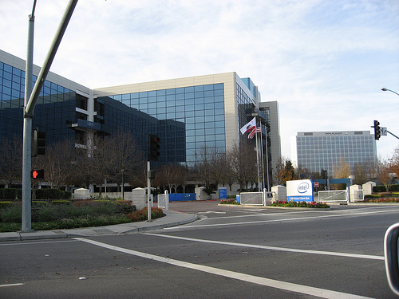

Intel soars after Trump says Apple will build its chips in America, and the market shrugs off the Fed

Shares of IntelInstitutionThe American chipmaker that pioneered the microprocessor and is now attempting a costly turnaround as a contract manufacturer. The US government took a roughly 10% stake in the company in 2025. surged on Thursday, June 18, after President Trump wrote on Truth SocialInstitutionThe social network owned by Trump Media, the president’s preferred channel for unfiltered announcements. The Intel-Apple claim landed there before either company had confirmed any deal. that “Apple has agreed to work with Intel to design and build its Chips in America.” The stock rose about 10.5%, up $12.72 to roughly $133.82, its highest level since Washington took its stake, valuing the company near $670 billion.
The companies were conspicuously quiet. Apple did not respond to requests for comment, and Intel said only that it would not comment “about a potential Apple-Intel agreement.” Analysts read the likely arrangement narrowly: Intel would fabricate some Apple-designed parts, perhaps a future M-series processor on its 18A-PConceptIntel’s next-generation manufacturing process, a refinement of its 18A node. Winning Apple as a foundry customer on it would validate Intel’s pivot to making chips for others. process for lower-end Macs and iPads, with volume targeted for late 2027, not the flagship iPhone silicon that still belongs to TSMC.
The Intel jump anchored a broad rebound, one day after Kevin WarshPersonThe new Federal Reserve chair, whose first meeting on June 17 produced a hawkish dot plot signaling a possible 2026 rate hike and sent stocks lower.’s first Fed meeting had knocked stocks down on a hawkish forecast. The Nasdaq led, closing up 1.91% at 26,517.93; the S&P 500 added 1.08% to about 7,500.58; the Dow edged up 0.14% to 51,564.70. Semiconductors carried the tape, with Micron up about 5% and Nvidia higher. US markets are closed Friday for JuneteenthConceptJune 19, a federal holiday since 2021 marking the end of slavery in Texas in 1865. US equity and bond markets are shut..
“Apple has agreed to work with Intel to design and build its Chips in America.”
Why it mattersA presidential post moved a $670 billion company roughly 10% before either named party confirmed a word, which is its own lesson in how policy and disclosure now collide. And the substance is real: an Apple foundry win would be the clearest proof yet that Intel’s turnaround, underwritten by a US equity stake, can actually attract the customers it was built to serve.